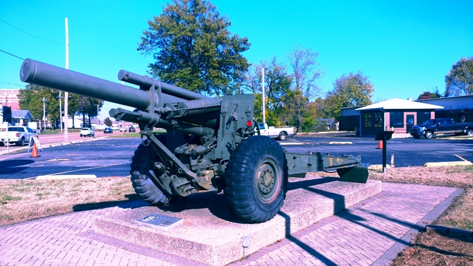
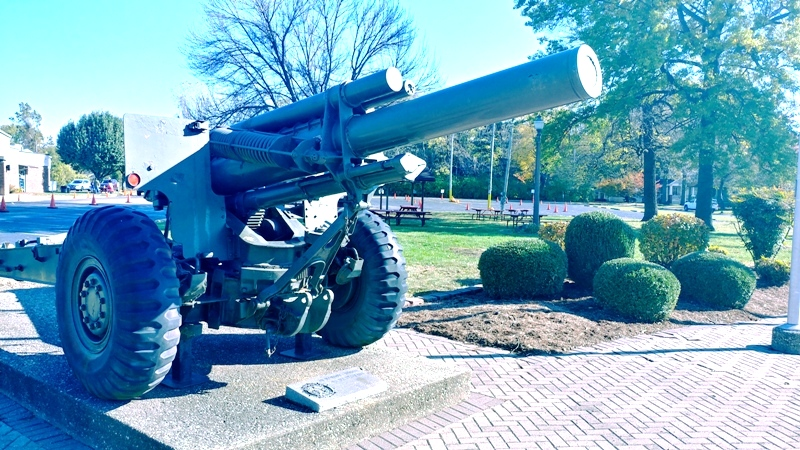

Our M114 Towed 155 mm Howitzer
The M114 is a towed howitzer developed and used by the United States Army. It was first produced in 1942 as a medium artillery piece under the designation of 155 mm Howitzer M1. It saw service with the US Army during World War II, the Korean War, and the Vietnam War, before being replaced by the M198 howitzer.
The gun was also used by the armed forces of many nations. The M114A1 remains in service in some countries.
Propelling Charges
| Model | Weight | Components |
|---|---|---|
| M3 | 2.69 kg (5 lb 15 oz) | Base charge and four incremental charges (for charges 1 to 5) |
| M4 | 6.29 kg (13 lb 14 oz) | Base charge and two incremental charges (for charges 5 to 7) |
| M4A1 | 6.31 kg (13 lb 15 oz) | Base charge and four incremental charges (for charges 3 to 7) |
| Mk I Dummy | 3.63 kg (8 lb) | Base charge and six incremental charges |
| M2 Dummy | 3.34 kg (7 lb 6 oz) | Base charge and six incremental charges |
Note: Different methods of measurement were used in different countries / periods. Direct comparison is often impossible.
Projectiles
| Type | Model | Weight | Filler | Muzzle velocity | Range |
|---|---|---|---|---|---|
| HE | HE M102 Shell | 43.13 kg (100 lb) | TNT, 7.06 kg (15 lb 9 oz) | - | - |
| HE | HE M107 Shell | 43 kg (90 lb) | TNT, 6.86 kg (15 lb 2 oz) | 564 m/s (1,850 ft/s) | 14,955 m (16,355 yd) |
| Smoke | FS M105 Shell | 45.14 kg (100 lb) | Sulfur trioxide in Chlorosulfonic acid, 7.67 kg (16 lb 15 oz) | - | - |
| Smoke | WP M105 Shell | 44.55 kg (100 lb) | White phosphorus (WP), 7.08 kg (15 lb 10 oz) | - | - |
| Smoke | FS M110 Shell | 45.45 kg (100 lb) | Sulfur trioxide in Chlorosulfonic acid, 7.67 kg (16 lb 15 oz) | - | - |
| Smoke | WP M110 Shell | 44.63 kg (100 lb) | White phosphorus (WP), 7.08 kg (15 lb 10 oz) | - | - |
| Smoke, colored | BE M116 Shell | 39.21 kg (90 lb) | Smoke mixture, 7.8 kg (17 lb 3 oz) | - | - |
| Smoke | HC BE M116 Shell | 43.14 kg (100 lb) | Zinc chloride (HC), 11.7 kg (25 lb 13 oz) | 564 m/s (1,850 ft/s) | 14,955 m (16,355 yd) |
| Chemical | CNS M110 Shell | 44.05 kg (100 lb) | Chloroacetophenone (CN), 6.26 kg (13 lb 13 oz) | - | - |
| Chemical | H M110 Shell | 43.09 kg (90 lb) | Mustard gas, 5.02 kg (11 lb 1 oz) | 564 m/s (1,850 ft/s) | 14,972 m (16,374 yd) |
| Nuclear | W48 Shell | 54 kg (100 lb) | Nuclear, 72 tonnes of TNT equivalent | 564 m/s (1,850 ft/s) | 14,972 m (16,374 yd) |
| Illumination | Illuminating M118 Shell | 46.77 kg (100 lb) | Illuminant candles, 4.02 kg (8 lb 14 oz) | - | - |
| Drill | Dummy Mk I Projectile | - | - | - | - |
| Drill | Dummy M7 Projectile | 43.09 kg (90 lb) | - | - | - |
Concrete Penetration (mm)
| Ammunition \ Distance | 0 m | 914 m (1,000 yd) | 2,743 m (3,000 yd) | 4,572 m (5,000 yd) |
|---|---|---|---|---|
| HE M107 Shell (meet angle 0°) | 884 mm (2 ft 11 in) | 792 mm (2 ft 7 in) | 610 mm (2 ft) | 488 mm (1 ft 7 in) |
Note: Different methods of measurement were used in different countries / periods. Direct comparison is often impossible.

